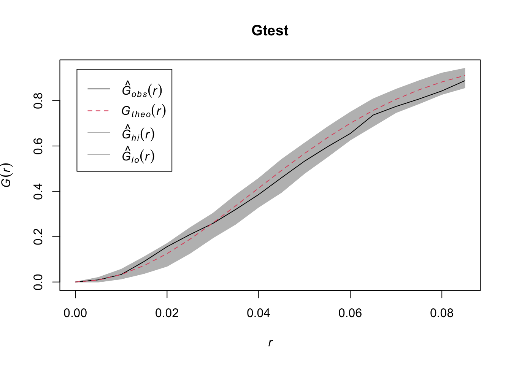
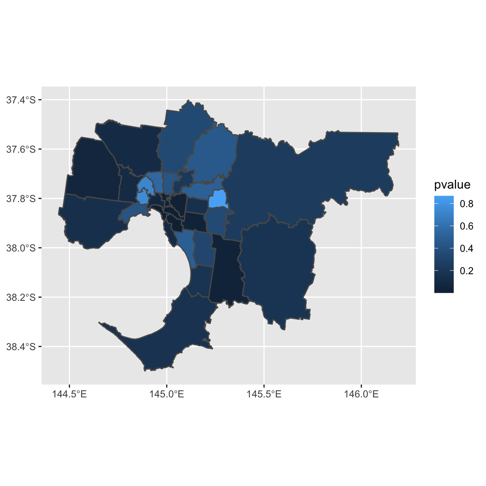
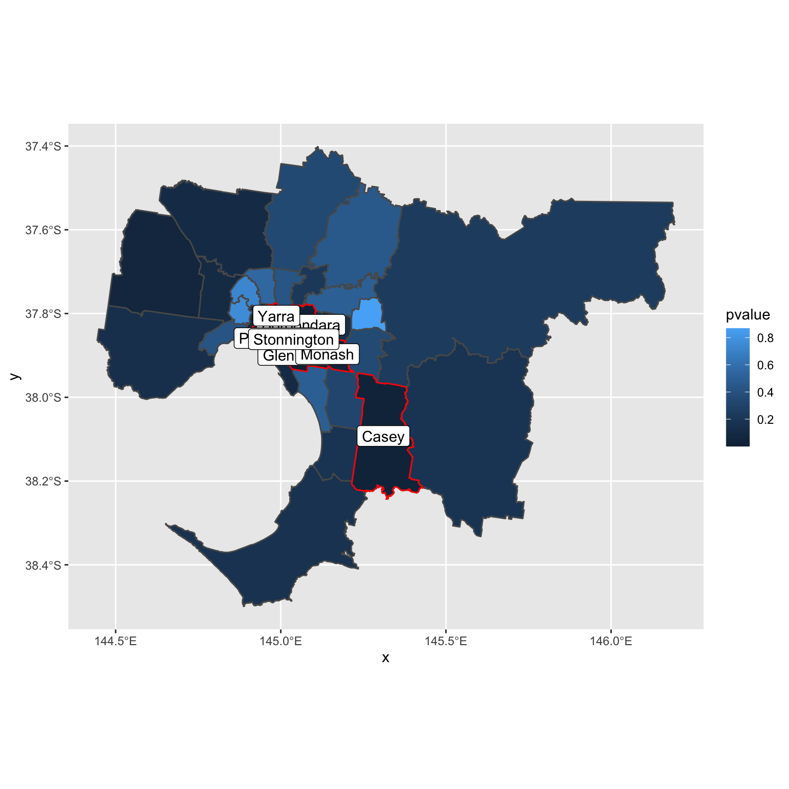

Week 4: Moran’s I, LISA
1 SpatialPolygonsDataFrame
- There are two ways to represent spatial shapes
- ggplot2 + sf: our preference
- sp class: SpatialPoints(DataFrame), SpatialLines(DataFrame), SpatialPolygons(DataFrame). Although it is not our focus, we have to know some basics since some R packages depend on sp class.
Due to time constrain, I will only talk SpatialPolygonsDataFrame.
First, the diagram 
1.1 Create Polygon
Here, we will create Polygon class. For example, Sr1 has the vertices \((2,2)\), \((4,3)\), \((4,5)\) and \((1,4)\). Note that \((2,2)\) needs to be written twice, since it is both the starting vertex and the ending vertex.
library(sp)
#getClass("Polygon")
Sr1 = Polygon(cbind(c(2,4,4,1,2),c(2,3,5,4,2)))
Sr2 = Polygon(cbind(c(5,4,2,5),c(2,3,2,2)))
Sr3 = Polygon(cbind(c(4,4,5,10,4),c(5,3,2,5,5)))
Sr4 = Polygon(cbind(c(5,6,6,5,5),c(4,4,3,3,4)), hole = TRUE)1.2 Create Polygons
A Polygons can contain any number of Polygon (including only 1 Polygon).
Why do we need polygons? Imagine you want to draw world map. Each Polygons can represent a country, while a Polygon cannot. For example, New Zealand comprises two major islands, and you need two polygons, which is a Polygons.
#getClass("Polygons")
Srs1 = Polygons(list(Sr1), "s1")
Srs2 = Polygons(list(Sr2), "s2")
Srs3 = Polygons(list(Sr3, Sr4), "s3/4")1.3 Create SpatialPolygons
#getClass("SpatialPolygons")
SpP = SpatialPolygons(list(Srs1,Srs2,Srs3), 1:3)
plot(SpP, col = 1:3, bg="yellow") Note that there is a hole in one of Polygons
1.4 Create SpatialPolygonsDataFrame
#getClass("SpatialPolygons")
df = data.frame(z1 = c(1.2,1.3,1.6), z2 = c(2.2,2.8,3.9), row.names = row.names(SpP))
SpPDF = SpatialPolygonsDataFrame(Sr = SpP, data = df)
spplot(SpPDF, zcol = "z1") The argument “row.names = row.names(SpP)” is needed.
The argument “row.names = row.names(SpP)” is needed.
2 Moran’s I
2.1 Create Weight Matrix
The dataset is gmel2, and it can be downloaded at https://github.com/TedChu/90122Lab/tree/master/datasets.
library(spdep)
load("datasets/gmel2.Rdata")R function poly2nb produces a spatial weight matrix from a SpatialPolygons(DataFrame) object.
## Convert gmel2 to SpatialPolygonsDataFrame, since the following packages require SpatialPolygonsDataFrame
gmel.sp = as(gmel2, "Spatial")
Wqueen = poly2nb(gmel.sp)
Wrook = poly2nb(gmel.sp, queen=FALSE)
plot(gmel.sp,border="grey60", axes=TRUE)
plot(Wqueen, coordinates(gmel.sp), pch=19, cex=0.6, add=TRUE,col="red")
plot(Wrook, coordinates(gmel.sp), pch=19, cex=0.6, add=TRUE)
- There are three potential class for spatial weight matrix: nb (neighborhood) class, mat (matrix) class, and listw class.
- They all store the same information, but in different formats.
- Different functions may require different formats. For example, moran.test requires the listw class. You can find these information in help files of these functions.
- Functions to transform between these three formats: nb2listw, nb2mat, mat2nb, etc.
Can you see the difference between queen rule and rook rule?
2.2 Moran’s I test
A Moran’s I test is performed on the variable price. More information about Moran’s I codes can be found in Cp1C – 8.
## plot
moran.test(x=gmel2$price, nb2listw(Wqueen), alternative="two.sided")##
## Moran I test under randomisation
##
## data: gmel2$price
## weights: nb2listw(Wqueen)
##
## Moran I statistic standard deviate = 5.8472, p-value = 5e-09
## alternative hypothesis: two.sided
## sample estimates:
## Moran I statistic Expectation Variance
## 0.59027230 -0.03333333 0.01137440Since the p-value < 0.05, we conclude that there is spatial autocorrelation for the house price in Greater Melbourne.
- Comments
- The function requires listw form for spatial weight matrix
- Argument alternative
- What will you do if the alternative test is “There is positive spatial autocorrelation”.
- The above test is Moran I test under randomisation.
- What does this mean?
- If you want to take analytical approach mentioned in lectures, what should you do?
2.3 LISA
LISA is performed on price variable.
resI = localmoran(gmel2$price, nb2listw(Wqueen), alternative="two.sided")
round(head(resI),3)## Ii E.Ii Var.Ii Z.Ii Pr(z != 0)
## 1 -0.123 -0.033 0.129 -0.250 0.803
## 2 1.407 -0.033 0.286 2.691 0.007
## 3 1.927 -0.033 0.129 5.462 0.000
## 4 0.497 -0.033 0.106 1.627 0.104
## 5 0.736 -0.033 0.129 2.143 0.032
## 6 0.665 -0.033 0.160 1.744 0.081- For the lisa output
- First column: the value of local moran’s I
- Second column: the expected value (which is \(-1/(n-1)\))
- Third column: the variance of local moran’s I
- Fourth column \(=\frac{(Ii - E.Ii)}{\sqrt{Var.Ii}}\)
- Fifth column: the p-value.
Next, some visualisation for the above results.
####
gmellisa = gmel2
gmellisa$lisa = resI[,1]
gmellisa$pvalue = resI[,5]
### Spatial plots with LISA value
library(ggplot2)
ggplot() + geom_sf(data=gmellisa, aes(fill = lisa))
ggplot() + geom_sf(data=gmellisa, aes(fill = pvalue))
Suppose we want to know which LGAs have significant local spatial autocorrelation (\(\alpha = 0.05\)).
gmellisa$name2[gmellisa$pvalue < 0.05]## [1] "Bayside" "Boroondara" "Casey" "Glen Eira" "Melton"
## [6] "Port Phillip" "Stonnington" "Yarra"They all have positive LISA values. If you want to formally test whether there are positive local autocorrelation, you will need to change alternative to greater.
You can also highlight these cities.
gmellisa2 = gmellisa[gmellisa$pvalue < 0.05, ]
ggplot() + geom_sf(data=gmellisa, aes(fill = pvalue)) +
geom_sf(data = gmellisa2, color = "red", alpha = 0) +
geom_sf_label(data = gmellisa2, aes(label = name2))
Or
ggplot() + geom_sf(data=gmellisa, aes(fill = lisa, color = (pvalue < 0.05)))Or
ggplot() + geom_sf(data=gmellisa, aes(fill = (pvalue<0.05)))